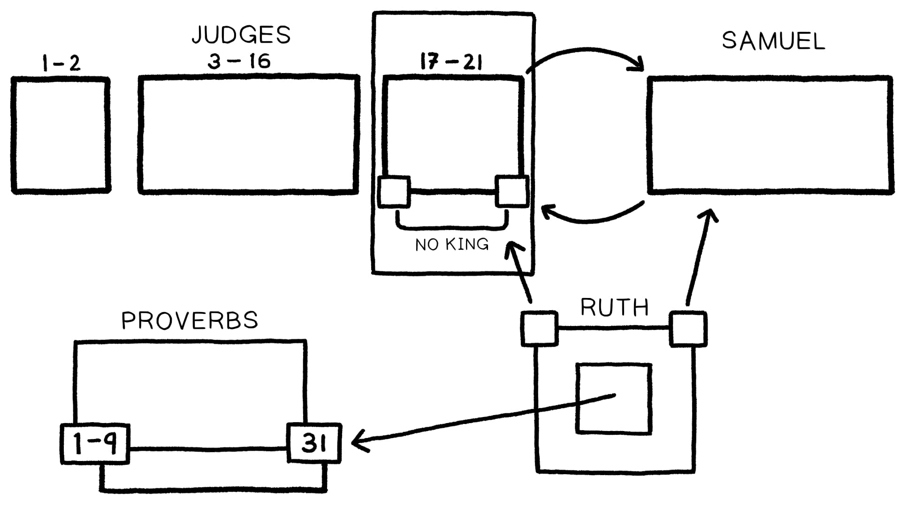

Sessão 11: A Bíblia Hebraica como um MosaicoSession 11: The Hebrew Bible as a Mosaic
Principais LiçõesKey Takeaways
- A Bíblia Hebraica é uma coleção de rolos que foi organizada com uma unidade de mosaico (ou seja, composta).The Hebrew Bible is a collection of scrolls that has been arranged with a mosaic (i.e., composite) unity.
- Os Ketuvim (ou seja, os Escritos) atuam como mini-comentários sobre os temas e ideias em ação em outras partes da Bíblia Hebraica.The Ketuvim (i.e., the Writings) acts as mini-commentaries on the themes and ideas at work elsewhere in the Hebrew Bible.
- A Bíblia Hebraica pode ser comparada a uma colcha de família feita de peças individuais de várias pessoas através de diferentes períodos de tempo. E cada peça individual adiciona novas camadas de significado e importância quando vista dentro do contexto da peça como um todo.The Hebrew Bible can be likened to a family quilt made up of individual pieces from various people throughout different time periods. And each individual piece adds new layers of meaning and significance when viewed within the context of the piece as a whole.
Como a Bíblia Hebraica é Como uma Colcha de FamíliaHow the Hebrew Bible is Like a Family Quilt
Uma colcha é feita de muitos materiais pré-existentes e consiste em peças individuais (como Rute ou Ester) ou subcoleções (as leis no Monte Sinai, Salmos). Esses materiais anteriores podem ser incorporados como estão ou reformatados editorialmente para se ajustar ao novo contexto. Mas o novo contexto geral da colcha final dá a cada peça individual uma nova camada de significado quando vista dentro de um contexto e quadro de referência maiores.A quilt is made of many preexisting materials and consists of individual pieces (like Ruth or Esther) or sub-collections (the laws at Mount Sinai, Psalms). These earlier materials can be incorporated as they stand or editorially reshaped to fit the new context. But the new overall context of the final quilt gives each individual piece a new layer of meaning when viewed within a larger context and frame of reference.
A primeira linha de Rute faz um hiperlink da história para a época de Juízes, e sua seção final é uma genealogia que leva a Davi. A ordenação das Bíblias cristãs modernas reflete isso ao colocar Rute cronologicamente entre o livro de Juízes e o livro de Samuel. O livro de Rute também reflete linguagem-chave que faz um hiperlink do personagem de Rute com a Senhora Sabedoria do livro de Provérbios. A ordenação do TaNaK coloca Rute tematicamente depois do livro de Provérbios, onde Rute serve como um comentário expandido sobre Provérbios 31.The first line of Ruth hyperlinks the story to the time of Judges, and its final section is a genealogy that leads to David. The ordering of modern Christian Bibles reflects this by placing Ruth chronologically between the time of the book of Judges and the book of Samuel. The book of Ruth also reflects key language that hyperlinks the character of Ruth to Lady Wisdom from the book of Proverbs. The ordering of the TaNaK places Ruth thematically after the book of Proverbs, where Ruth serves as an expanded commentary on Proverbs 31.


Pergunta para ReflexãoReflection Question
Você viu como o livro de Rute é interligado a Juízes, Samuel e Provérbios. Isso acontece por toda a Bíblia Hebraica! Você acha que ver esses hiperlinks é necessário para entender o significado de um texto ou livro? Explique seu raciocínio.You've seen how the book of Ruth is hyperlinked to Judges, Samuel, and Proverbs. This happens all throughout the Hebrew Bible! Do you think that seeing these hyperlinks is necessary for understanding the meaning of a text or book? Explain your reasoning.